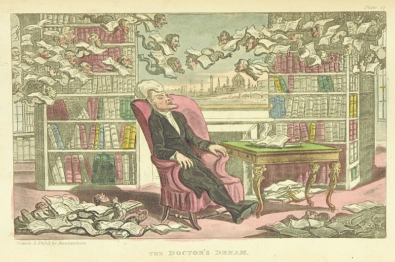

William Combe: A Literary Analysis
Welcome to the William Combe Project!
Here, we look into some works by author William Combe!
- Plot a timeline of the works of William Combe's life. What was he working on and when?
- Modern Spectator: compare the letter writers to the original Spectator and see how many are close to the original ideas
- Stylometric Analysis of each letter portion to see if any/all were written by Combe (and which ones weren't to eventually see if the named writer exists in any available records)
- What did William Combe read? A collection of his epigraphs.
Created by:
Alyssa Argento and Dorothea Lint. GitHub.  Powered by
firebellies.
Powered by
firebellies.
Powered by
firebellies.